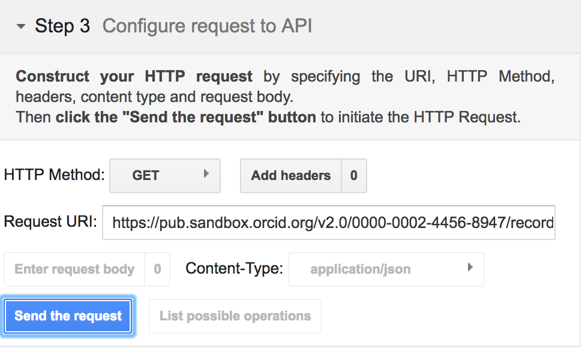
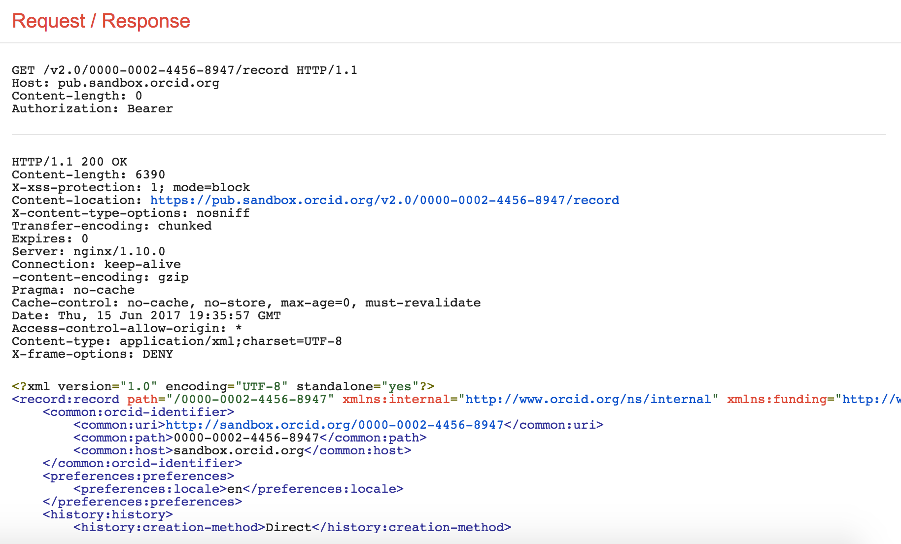
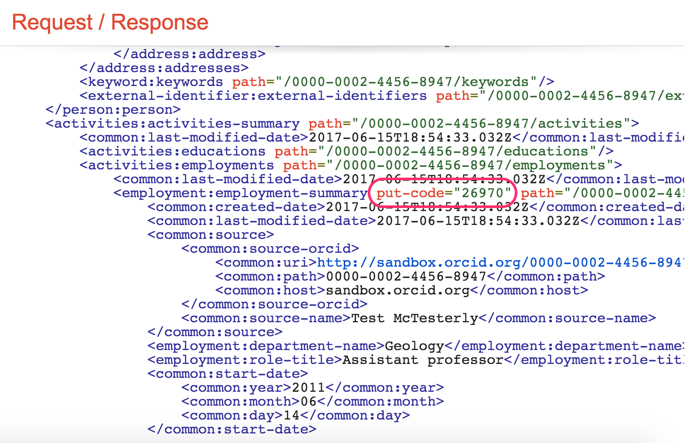
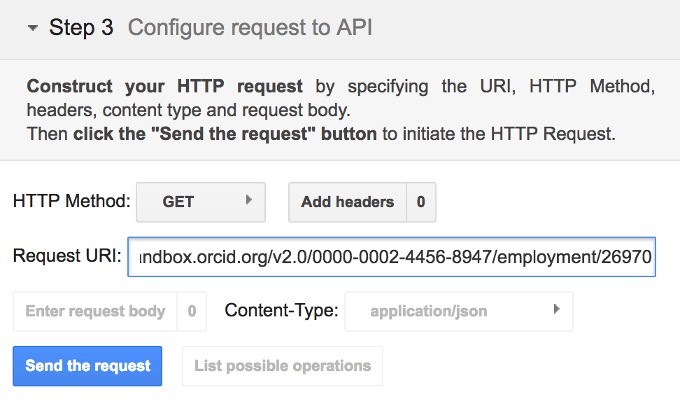
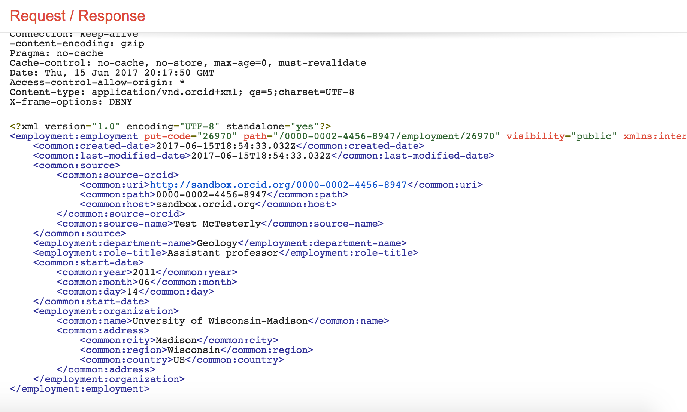

3. READ: public info
In this section, we'll use the Public API to take a look at the underlying data for our Sandbox record.
Read a record summary
- In a new window or tab, visit https://developers.google.com/oauthplayground
- On the left side of the screen, click Step 3 Configure request to API
- In the Request URI field enter:
https://pub.sandbox.orcid.org/v2.0/[ORCID ID]/record
Replace [ORCID ID] with the iD for your Sandbox record, format XXXX-XXXX-XXXX-XXXX
 - Click Send the request
- A summary version of your record in XML format will appear in the Request/Response section

Read activity details
To get more information about a specific item on an ORCID record, you can retrieve that individual item using its put-code.
- In the record summary XML, find the activities-summary section, then find the put-code for the employment item that you added in the previous section.
 - In the Request URI field enter:
https://pub.sandbox.orcid.org/v2.0/[ORCID ID]/employment/[PUT CODE]
Replace [ORCID ID] with the iD for your Sandbox record, format XXXX-XXXX-XXXX-XXXX and [PUT CODE] with the put-code for your employment item
 - Click Send the request
- Full details of your employment entry will appear in the Request/Response section
